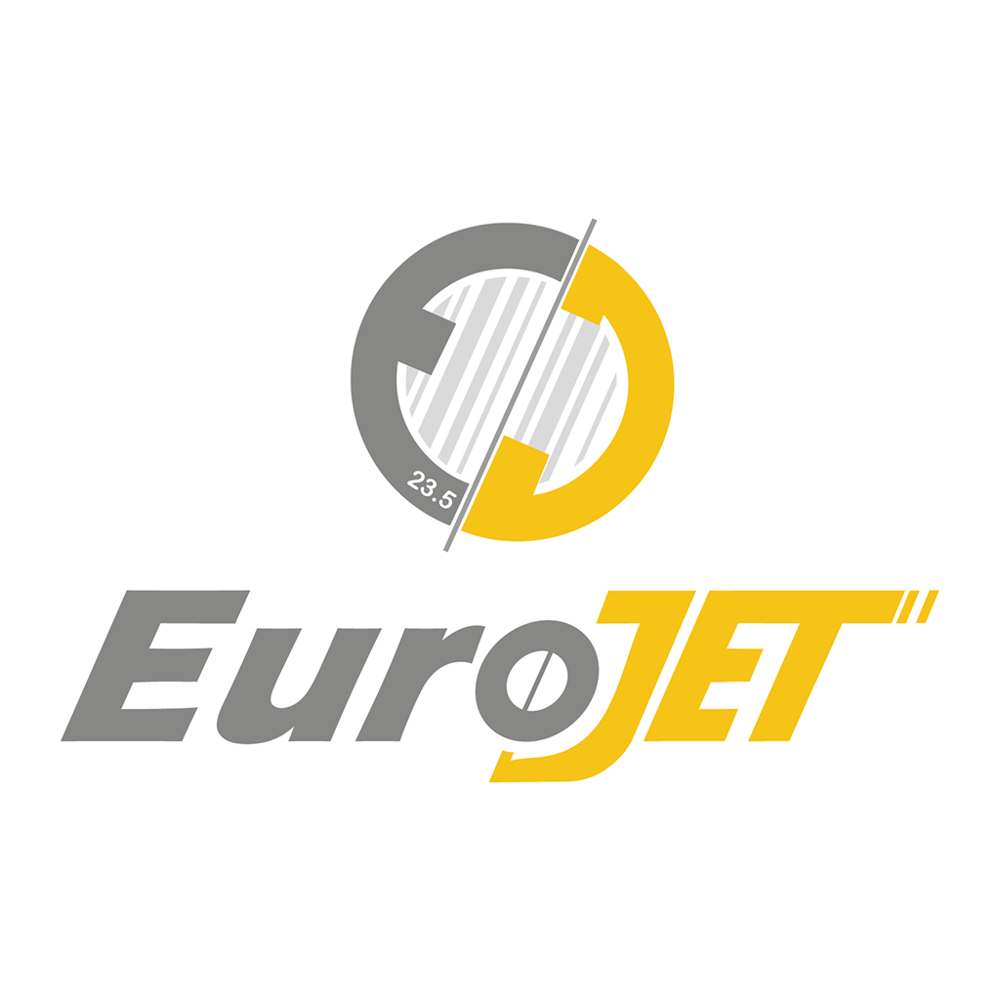

Private Automation System
ContentPoster is a closed, internal server-to-server automation tool developed exclusively for the EuroJET manufacturing facility. It is designed to streamline the daily publishing of our industrial promotional videos directly to our corporate social media channels, including TikTok and YouTube.
This system operates strictly internally. Our videography and content team manages media queues via a private, secure Telegram bot interface. Once approved, the backend automatically distributes the media to our linked corporate accounts. There is no public access, no public registration, and no external users permitted.